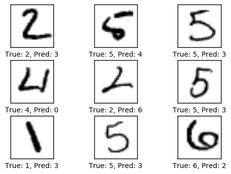
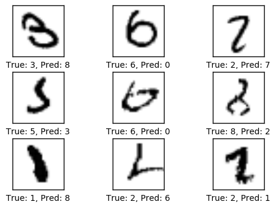
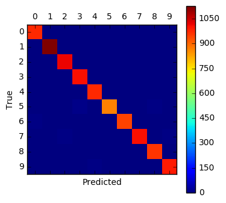
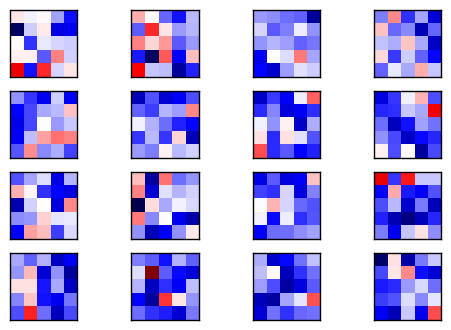
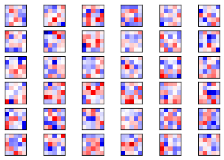
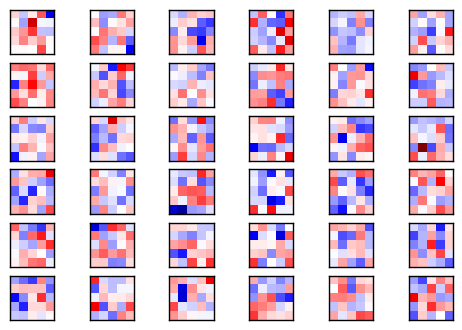

TensorFlow 教程 #03
PrettyTensor
by Magnus Erik Hvass Pedersen
/ GitHub / Videos on YouTube
中文翻译 thrillerist/Github
简介
之前的教程演示了如何在TensorFlow中实现一个卷积神经网络，这需要了解一些TensorFlow工作的底层原理。它有点复杂，实现起来还容易犯错。
这篇教程为我们说明了如何使用TensorFlow的一个附加包PrettyTensor，它也是Google开发的。PrettyTensor提供了在TensorFlow中创建神经网络的更简单的方法，让我们可以关注自己想要实现的想法，而不用过多担心底层的实现细节。这也让代码更短、更容易阅读和修改。
除了用PrettyTensor构造图之外，这篇教程的大部分代码和教程 #02 中的一样，当然还有一些细微的变化。
这篇教程是基于教程 #02 之上的，如果你是TensorFlow新手的话，推荐先学完上一份教程。你需要熟悉基本的线性代数、Python和Jupyter Notebook编辑器。
流程图
下面的图表直接展示了之后实现的卷积神经网络中数据的传递。关于卷积的详细描述请看上一篇教程。
from IPython.display import Image
Image('images/02_network_flowchart.png')

输入图像在第一层卷基层中用权重过滤器处理。结果在16张新图里，每个代表了卷积层里一个过滤器（的处理结果）。图像也经过降采样，因此图像分辨率从28x28减少到14x14。
这16张小图在第二个卷积层中处理。这16个通道都需要一个权重过滤，这层的输出的每个通道也各需要一个权重过滤。总共有36个输出，所以在第二个卷积层有16 x 36 = 576个滤波器。输出图再一次降采样到7x7个像素。
第二个卷积层的输出是36张7x7像素的图像。它们被压到一个长为7 x 7 x 36 = 1764的向量中去，它作为一个有128个神经元（或元素）的全连接网络的输入。这些又输入到另一个有10个神经元的全连接层中，每个神经元代表一个类别，用来确定图像的类别，也即图像上的数字。
卷积滤波一开始是随机挑选的，因此分类也是随机完成的。根据交叉熵（cross-entropy）来测量输入图预测值和真实类别间的错误。然后优化器用链式法则自动地将这个误差传在卷积网络中传递，更新滤波权重来提升分类质量。这个过程迭代了几千次，直到分类误差足够低。
这些特定的滤波权重和中间图像是一个优化的结果，和你执行这些代码所看到的可能会有所不同。
注意，这些在TensorFlow上的计算是在一部分图像上执行，而非单独的一张图，这使得计算更有效。也意味着在TensorFlow上实现时，这个流程图实际上会有更多的数据维度。
导入
%matplotlib inline
import matplotlib.pyplot as plt
import tensorflow as tf
import numpy as np
from sklearn.metrics import confusion_matrix
import time
from datetime import timedelta
import math
# We also need PrettyTensor.
import prettytensor as pt
使用Python3.5.2（Anaconda）开发，TensorFlow版本是：
tf.__version__
'0.12.0-rc0'
PrettyTensor 版本:
pt.__version__
'0.7.1'
载入数据
MNIST数据集大约12MB，如果没在给定路径中找到就会自动下载。
from tensorflow.examples.tutorials.mnist import input_data
data = input_data.read_data_sets('data/MNIST/', one_hot=True)
Extracting data/MNIST/train-images-idx3-ubyte.gz
Extracting data/MNIST/train-labels-idx1-ubyte.gz
Extracting data/MNIST/t10k-images-idx3-ubyte.gz
Extracting data/MNIST/t10k-labels-idx1-ubyte.gz
现在已经载入了MNIST数据集，它由70,000张图像和对应的标签（比如图像的类别）组成。数据集分成三份互相独立的子集。我们在教程中只用训练集和测试集。
print("Size of:")
print("- Training-set:\t\t{}".format(len(data.train.labels)))
print("- Test-set:\t\t{}".format(len(data.test.labels)))
print("- Validation-set:\t{}".format(len(data.validation.labels)))
Size of:
- Training-set: 55000
- Test-set: 10000
- Validation-set: 5000
类型标签使用One-Hot编码，这意外每个标签是长为10的向量，除了一个元素之外，其他的都为零。这个元素的索引就是类别的数字，即相应图片中画的数字。我们也需要测试数据集类别数字的整型值，用下面的方法来计算。
data.test.cls = np.argmax(data.test.labels, axis=1)
数据维度
在下面的源码中，有很多地方用到了数据维度。它们只在一个地方定义，因此我们可以在代码中使用这些数字而不是直接写数字。
# We know that MNIST images are 28 pixels in each dimension.
img_size = 28
# Images are stored in one-dimensional arrays of this length.
img_size_flat = img_size * img_size
# Tuple with height and width of images used to reshape arrays.
img_shape = (img_size, img_size)
# Number of colour channels for the images: 1 channel for gray-scale.
num_channels = 1
# Number of classes, one class for each of 10 digits.
num_classes = 10
用来绘制图片的帮助函数
这个函数用来在3x3的栅格中画9张图像，然后在每张图像下面写出真实类别和预测类别。
def plot_images(images, cls_true, cls_pred=None):
assert len(images) == len(cls_true) == 9
# Create figure with 3x3 sub-plots.
fig, axes = plt.subplots(3, 3)
fig.subplots_adjust(hspace=0.3, wspace=0.3)
for i, ax in enumerate(axes.flat):
# Plot image.
ax.imshow(images[i].reshape(img_shape), cmap='binary')
# Show true and predicted classes.
if cls_pred is None:
xlabel = "True: {0}".format(cls_true[i])
else:
xlabel = "True: {0}, Pred: {1}".format(cls_true[i], cls_pred[i])
# Show the classes as the label on the x-axis.
ax.set_xlabel(xlabel)
# Remove ticks from the plot.
ax.set_xticks([])
ax.set_yticks([])
# Ensure the plot is shown correctly with multiple plots
# in a single Notebook cell.
plt.show()
绘制几张图像来看看数据是否正确
# Get the first images from the test-set.
images = data.test.images[0:9]
# Get the true classes for those images.
cls_true = data.test.cls[0:9]
# Plot the images and labels using our helper-function above.
plot_images(images=images, cls_true=cls_true)

TensorFlow图
TensorFlow的全部目的就是使用一个称之为计算图（computational graph）的东西，它会比直接在Python中进行相同计算量要高效得多。TensorFlow比Numpy更高效，因为TensorFlow了解整个需要运行的计算图，然而Numpy只知道某个时间点上唯一的数学运算。
TensorFlow也能够自动地计算需要优化的变量的梯度，使得模型有更好的表现。这是由于图是简单数学表达式的结合，因此整个图的梯度可以用链式法则推导出来。
TensorFlow还能利用多核CPU和GPU，Google也为TensorFlow制造了称为TPUs（Tensor Processing Units）的特殊芯片，它比GPU更快。
一个TensorFlow图由下面几个部分组成，后面会详细描述：
- 占位符变量（Placeholder）用来改变图的输入。
- 模型变量（Model）将会被优化，使得模型表现得更好。
- 模型本质上就是一些数学函数，它根据Placeholder和模型的输入变量来计算一些输出。
- 一个cost度量用来指导变量的优化。
- 一个优化策略会更新模型的变量。
另外，TensorFlow图也包含了一些调试状态，比如用TensorBoard打印log数据，本教程不涉及这些。
占位符 （Placeholder）变量
Placeholder是作为图的输入，我们每次运行图的时候都可能改变它们。将这个过程称为feeding placeholder变量，后面将会描述这个。
首先我们为输入图像定义placeholder变量。这让我们可以改变输入到TensorFlow图中的图像。这也是一个张量（tensor），代表一个多维向量或矩阵。数据类型设置为float32，形状设为[None, img_size_flat]，None代表tensor可能保存着任意数量的图像，每张图象是一个长度为img_size_flat的向量。
x = tf.placeholder(tf.float32, shape=[None, img_size_flat], name='x')
卷积层希望x被编码为4维张量，因此我们需要将它的形状转换至[num_images, img_height, img_width, num_channels]。注意img_height == img_width == img_size，如果第一维的大小设为-1，num_images的大小也会被自动推导出来。转换运算如下：
x_image = tf.reshape(x, [-1, img_size, img_size, num_channels])
接下来我们为输入变量x中的图像所对应的真实标签定义placeholder变量。变量的形状是[None, num_classes]，这代表着它保存了任意数量的标签，每个标签是长度为num_classes的向量，本例中长度为10。
y_true = tf.placeholder(tf.float32, shape=[None, 10], name='y_true')
我们也可以为class-number提供一个placeholder，但这里用argmax来计算它。这里只是TensorFlow中的一些操作，没有执行什么运算。
y_true_cls = tf.argmax(y_true, dimension=1)
TensorFlow 实现
这一节显示了教程 #02 中直接用TensorFlow实现卷积神经网络的源代码。这份Notebook中并没有直接用到这些代码，只是为了方便和下面PrettyTensor的实现进行比较。
这里要注意的是有多少代码量以及TensorFlow保存数据、进行运算的底层细节。即使在很小的神经网络中也容易犯错。
帮助函数
在直接用TensorFlow实现时，我们创建一些在构造图时常用到的帮助函数。
这两个函数在TensorFlow图中创建新的变量并用随机值初始化。
def new_weights(shape):
return tf.Variable(tf.truncated_normal(shape, stddev=0.05))
def new_biases(length):
return tf.Variable(tf.constant(0.05, shape=[length]))
下面的帮助函数创建一个新的卷积网络。输入和输出是4维的张量（4-rank tensors）。注意TensorFlow API的底层细节，比如权重变量的大小。这里很容易犯错，可能会导致奇怪的错误信息，并且很难调试。
def new_conv_layer(input, # The previous layer.
num_input_channels, # Num. channels in prev. layer.
filter_size, # Width and height of filters.
num_filters, # Number of filters.
use_pooling=True): # Use 2x2 max-pooling.
# Shape of the filter-weights for the convolution.
# This format is determined by the TensorFlow API.
shape = [filter_size, filter_size, num_input_channels, num_filters]
# Create new weights aka. filters with the given shape.
weights = new_weights(shape=shape)
# Create new biases, one for each filter.
biases = new_biases(length=num_filters)
# Create the TensorFlow operation for convolution.
# Note the strides are set to 1 in all dimensions.
# The first and last stride must always be 1,
# because the first is for the image-number and
# the last is for the input-channel.
# But e.g. strides=[1, 2, 2, 1] would mean that the filter
# is moved 2 pixels across the x- and y-axis of the image.
# The padding is set to 'SAME' which means the input image
# is padded with zeroes so the size of the output is the same.
layer = tf.nn.conv2d(input=input,
filter=weights,
strides=[1, 1, 1, 1],
padding='SAME')
# Add the biases to the results of the convolution.
# A bias-value is added to each filter-channel.
layer += biases
# Use pooling to down-sample the image resolution?
if use_pooling:
# This is 2x2 max-pooling, which means that we
# consider 2x2 windows and select the largest value
# in each window. Then we move 2 pixels to the next window.
layer = tf.nn.max_pool(value=layer,
ksize=[1, 2, 2, 1],
strides=[1, 2, 2, 1],
padding='SAME')
# Rectified Linear Unit (ReLU).
# It calculates max(x, 0) for each input pixel x.
# This adds some non-linearity to the formula and allows us
# to learn more complicated functions.
layer = tf.nn.relu(layer)
# Note that ReLU is normally executed before the pooling,
# but since relu(max_pool(x)) == max_pool(relu(x)) we can
# save 75% of the relu-operations by max-pooling first.
# We return both the resulting layer and the filter-weights
# because we will plot the weights later.
return layer, weights
下面的帮助函数将一个4维张量转换到2维，因此我们可以在卷积层之后添加一个全连接层。
def flatten_layer(layer):
# Get the shape of the input layer.
layer_shape = layer.get_shape()
# The shape of the input layer is assumed to be:
# layer_shape == [num_images, img_height, img_width, num_channels]
# The number of features is: img_height * img_width * num_channels
# We can use a function from TensorFlow to calculate this.
num_features = layer_shape[1:4].num_elements()
# Reshape the layer to [num_images, num_features].
# Note that we just set the size of the second dimension
# to num_features and the size of the first dimension to -1
# which means the size in that dimension is calculated
# so the total size of the tensor is unchanged from the reshaping.
layer_flat = tf.reshape(layer, [-1, num_features])
# The shape of the flattened layer is now:
# [num_images, img_height * img_width * num_channels]
# Return both the flattened layer and the number of features.
return layer_flat, num_features
接下来的帮助函数创建一个全连接层。
def new_fc_layer(input, # The previous layer.
num_inputs, # Num. inputs from prev. layer.
num_outputs, # Num. outputs.
use_relu=True): # Use Rectified Linear Unit (ReLU)?
# Create new weights and biases.
weights = new_weights(shape=[num_inputs, num_outputs])
biases = new_biases(length=num_outputs)
# Calculate the layer as the matrix multiplication of
# the input and weights, and then add the bias-values.
layer = tf.matmul(input, weights) + biases
# Use ReLU?
if use_relu:
layer = tf.nn.relu(layer)
return layer
构造图（Graph）
现在将会用上面的帮助函数来创建卷积神经网络。如果没有这些函数的话，代码将会又长又难以理解。
注意，我们并不会运行下面的代码。写在这里只是为了与PrettyTensor的代码进行比较。
之前的教程使用定义好的常量，因此很容易改变（变量）。比如，我们没有将 filter_size=5 当作 new_conv_layer()的参数，而是令filter_size=filter_size1，然后在其他地方定义filter_size1=5。这样子就很容易改变所有的常量。
if False: # Don't execute this! Just show it for easy comparison.
# First convolutional layer.
layer_conv1, weights_conv1 = \
new_conv_layer(input=x_image,
num_input_channels=num_channels,
filter_size=5,
num_filters=16,
use_pooling=True)
# Second convolutional layer.
layer_conv2, weights_conv2 = \
new_conv_layer(input=layer_conv1,
num_input_channels=16,
filter_size=5,
num_filters=36,
use_pooling=True)
# Flatten layer.
layer_flat, num_features = flatten_layer(layer_conv2)
# First fully-connected layer.
layer_fc1 = new_fc_layer(input=layer_flat,
num_inputs=num_features,
num_outputs=128,
use_relu=True)
# Second fully-connected layer.
layer_fc2 = new_fc_layer(input=layer_fc1,
num_inputs=128,
num_outputs=num_classes,
use_relu=False)
# Predicted class-label.
y_pred = tf.nn.softmax(layer_fc2)
# Cross-entropy for the classification of each image.
cross_entropy = \
tf.nn.softmax_cross_entropy_with_logits(logits=layer_fc2,
labels=y_true)
# Loss aka. cost-measure.
# This is the scalar value that must be minimized.
loss = tf.reduce_mean(cross_entropy)
PrettyTensor实现
这一节演示如何用PrettyTensor来实现一个相同的卷积神经网络。
基本思想就是用一个PrettyTensor object封装输入张量x_image，它有一个添加新卷积层的帮助函数，以此来创建整个神经网络。这有点像我们之前实现的那些帮助函数，但它更简单一些，因为PrettyTensor记录每一层的输入和输出维度等等。
x_pretty = pt.wrap(x_image)
现在我们已经将输入图像装到一个PrettyTensor的object中，再用几行代码就可以添加卷积层和全连接层。
注意，在with代码块中，pt.defaults_scope(activation_fn=tf.nn.relu) 把 activation_fn=tf.nn.relu当作每个的层参数，因此这些层都用到了 Rectified Linear Units (ReLU) 。defaults_scope使我们能更方便地修改所有层的参数。
with pt.defaults_scope(activation_fn=tf.nn.relu):
y_pred, loss = x_pretty.\
conv2d(kernel=5, depth=16, name='layer_conv1').\
max_pool(kernel=2, stride=2).\
conv2d(kernel=5, depth=36, name='layer_conv2').\
max_pool(kernel=2, stride=2).\
flatten().\
fully_connected(size=128, name='layer_fc1').\
softmax_classifier(num_classes=num_classes, labels=y_true)
就是这样！现在我们用几行代码就创建了一个完全一样的卷积神经网络，如果直接用TensorFlow实现的话需要一大段非常复杂的代码。
用PrettyTensor来代替TensorFlow，我们可以清楚地看到网络的构造以及数据如何在网络中流通。这让我们可以专注于神经网络的关键思想而不是底层的实现细节。它十分简单优雅！
获取权重
不幸的是，使用PrettyTensor时并非所有的事都那么优雅。
下面，我们想要绘制出卷积层的权重。在用TensorFlow实现时，我们自己创建了变量，所以可以直接访问它们。但使用PrettyTensor构造网络时，所有的变量都是间接地由PrettyTensor创建。因此我们不得不从TensorFlow中找回变量。
我们用layer_conv1 和 layer_conv2代表两个卷积层。这也叫变量作用域（不要与上面描述的defaults_scope混淆了）。PrettyTensor会自动给它为每个层创建的变量命名，因此我们可以通过层的作用域名称和变量名来取得某一层的权重。
函数实现有点笨拙，因为我们不得不用TensorFlow函数get_variable()，它是设计给其他用途的，创建新的变量或重用现有变量。创建下面的帮助函数很简单。
def get_weights_variable(layer_name):
# Retrieve an existing variable named 'weights' in the scope
# with the given layer_name.
# This is awkward because the TensorFlow function was
# really intended for another purpose.
with tf.variable_scope(layer_name, reuse=True):
variable = tf.get_variable('weights')
return variable
借助这个帮助函数我们可以获取变量。这些是TensorFlow的objects。你需要类似的操作来获取变量的内容： contents = session.run(weights_conv1) ，下面会提到这个。
weights_conv1 = get_weights_variable(layer_name='layer_conv1')
weights_conv2 = get_weights_variable(layer_name='layer_conv2')
优化方法
PrettyTensor给我们提供了预测类型标签(y_pred)以及一个需要最小化的损失度量，用来提升神经网络分类图片的能力。
PrettyTensor的文档并没有说明它的损失度量是用cross-entropy还是其他的。但现在我们用AdamOptimizer来最小化损失。
优化过程并不是在这里执行。实际上，还没计算任何东西，我们只是往TensorFlow图中添加了优化器，以便后续操作。
optimizer = tf.train.AdamOptimizer(learning_rate=1e-4).minimize(loss)
性能度量
我们需要另外一些性能度量，来向用户展示这个过程。
首先我们从神经网络输出的y_pred中计算出预测的类别，它是一个包含10个元素的向量。类别数字是最大元素的索引。
y_pred_cls = tf.argmax(y_pred, dimension=1)
然后创建一个布尔向量，用来告诉我们每张图片的真实类别是否与预测类别相同。
correct_prediction = tf.equal(y_pred_cls, y_true_cls)
上面的计算先将布尔值向量类型转换成浮点型向量，这样子False就变成0，True变成1，然后计算这些值的平均数，以此来计算分类的准确度。
accuracy = tf.reduce_mean(tf.cast(correct_prediction, tf.float32))
运行TensorFlow
创建TensorFlow会话（session）
一旦创建了TensorFlow图，我们需要创建一个TensorFlow会话，用来运行图。
session = tf.Session()
初始化变量
我们需要在开始优化weights和biases变量之前对它们进行初始化。
session.run(tf.global_variables_initializer())
用来优化迭代的帮助函数
在训练集中有50,000张图。用这些图像计算模型的梯度会花很多时间。因此我们利用随机梯度下降的方法，它在优化器的每次迭代里只用到了一小部分的图像。 如果内存耗尽导致电脑死机或变得很慢，你应该试着减少这些数量，但同时可能还需要更优化的迭代。
train_batch_size = 64
函数执行了多次的优化迭代来逐步地提升网络层的变量。在每次迭代中，从训练集中选择一批新的数据，然后TensorFlow用这些训练样本来执行优化器。每100次迭代会打印出相关信息。
# Counter for total number of iterations performed so far.
total_iterations = 0
def optimize(num_iterations):
# Ensure we update the global variable rather than a local copy.
global total_iterations
# Start-time used for printing time-usage below.
start_time = time.time()
for i in range(total_iterations,
total_iterations + num_iterations):
# Get a batch of training examples.
# x_batch now holds a batch of images and
# y_true_batch are the true labels for those images.
x_batch, y_true_batch = data.train.next_batch(train_batch_size)
# Put the batch into a dict with the proper names
# for placeholder variables in the TensorFlow graph.
feed_dict_train = {x: x_batch,
y_true: y_true_batch}
# Run the optimizer using this batch of training data.
# TensorFlow assigns the variables in feed_dict_train
# to the placeholder variables and then runs the optimizer.
session.run(optimizer, feed_dict=feed_dict_train)
# Print status every 100 iterations.
if i % 100 == 0:
# Calculate the accuracy on the training-set.
acc = session.run(accuracy, feed_dict=feed_dict_train)
# Message for printing.
msg = "Optimization Iteration: {0:>6}, Training Accuracy: {1:>6.1%}"
# Print it.
print(msg.format(i + 1, acc))
# Update the total number of iterations performed.
total_iterations += num_iterations
# Ending time.
end_time = time.time()
# Difference between start and end-times.
time_dif = end_time - start_time
# Print the time-usage.
print("Time usage: " + str(timedelta(seconds=int(round(time_dif)))))
用来绘制错误样本的帮助函数
函数用来绘制测试集中被误分类的样本。
def plot_example_errors(cls_pred, correct):
# This function is called from print_test_accuracy() below.
# cls_pred is an array of the predicted class-number for
# all images in the test-set.
# correct is a boolean array whether the predicted class
# is equal to the true class for each image in the test-set.
# Negate the boolean array.
incorrect = (correct == False)
# Get the images from the test-set that have been
# incorrectly classified.
images = data.test.images[incorrect]
# Get the predicted classes for those images.
cls_pred = cls_pred[incorrect]
# Get the true classes for those images.
cls_true = data.test.cls[incorrect]
# Plot the first 9 images.
plot_images(images=images[0:9],
cls_true=cls_true[0:9],
cls_pred=cls_pred[0:9])
绘制混淆（confusion）矩阵的帮助函数
def plot_confusion_matrix(cls_pred):
# This is called from print_test_accuracy() below.
# cls_pred is an array of the predicted class-number for
# all images in the test-set.
# Get the true classifications for the test-set.
cls_true = data.test.cls
# Get the confusion matrix using sklearn.
cm = confusion_matrix(y_true=cls_true,
y_pred=cls_pred)
# Print the confusion matrix as text.
print(cm)
# Plot the confusion matrix as an image.
plt.matshow(cm)
# Make various adjustments to the plot.
plt.colorbar()
tick_marks = np.arange(num_classes)
plt.xticks(tick_marks, range(num_classes))
plt.yticks(tick_marks, range(num_classes))
plt.xlabel('Predicted')
plt.ylabel('True')
# Ensure the plot is shown correctly with multiple plots
# in a single Notebook cell.
plt.show()
展示性能的帮助函数
函数用来打印测试集上的分类准确度。
为测试集上的所有图片计算分类会花费一段时间，因此我们直接用这个函数来调用上面的结果，这样就不用每次都重新计算了。
这个函数可能会占用很多电脑内存，这也是为什么将测试集分成更小的几个部分。如果你的电脑内存比较小或死机了，就要试着降低batch-size。
# Split the test-set into smaller batches of this size.
test_batch_size = 256
def print_test_accuracy(show_example_errors=False,
show_confusion_matrix=False):
# Number of images in the test-set.
num_test = len(data.test.images)
# Allocate an array for the predicted classes which
# will be calculated in batches and filled into this array.
cls_pred = np.zeros(shape=num_test, dtype=np.int)
# Now calculate the predicted classes for the batches.
# We will just iterate through all the batches.
# There might be a more clever and Pythonic way of doing this.
# The starting index for the next batch is denoted i.
i = 0
while i < num_test:
# The ending index for the next batch is denoted j.
j = min(i + test_batch_size, num_test)
# Get the images from the test-set between index i and j.
images = data.test.images[i:j, :]
# Get the associated labels.
labels = data.test.labels[i:j, :]
# Create a feed-dict with these images and labels.
feed_dict = {x: images,
y_true: labels}
# Calculate the predicted class using TensorFlow.
cls_pred[i:j] = session.run(y_pred_cls, feed_dict=feed_dict)
# Set the start-index for the next batch to the
# end-index of the current batch.
i = j
# Convenience variable for the true class-numbers of the test-set.
cls_true = data.test.cls
# Create a boolean array whether each image is correctly classified.
correct = (cls_true == cls_pred)
# Calculate the number of correctly classified images.
# When summing a boolean array, False means 0 and True means 1.
correct_sum = correct.sum()
# Classification accuracy is the number of correctly classified
# images divided by the total number of images in the test-set.
acc = float(correct_sum) / num_test
# Print the accuracy.
msg = "Accuracy on Test-Set: {0:.1%} ({1} / {2})"
print(msg.format(acc, correct_sum, num_test))
# Plot some examples of mis-classifications, if desired.
if show_example_errors:
print("Example errors:")
plot_example_errors(cls_pred=cls_pred, correct=correct)
# Plot the confusion matrix, if desired.
if show_confusion_matrix:
print("Confusion Matrix:")
plot_confusion_matrix(cls_pred=cls_pred)
优化之前的性能
测试集上的准确度很低，这是由于模型只做了初始化，并没做任何优化，所以它只是对图像做随机分类。
print_test_accuracy()
Accuracy on Test-Set: 9.1% (909 / 10000)
1次迭代后的性能
做了一次优化后，此时优化器的学习率很低，性能其实并没有多大提升。
optimize(num_iterations=1)
Optimization Iteration: 1, Training Accuracy: 6.2%
Time usage: 0:00:00
print_test_accuracy()
Accuracy on Test-Set: 8.9% (892 / 10000)
100次迭代优化后的性能
100次优化迭代之后，模型显著地提升了分类的准确度。
optimize(num_iterations=99) # We already performed 1 iteration above.
Time usage: 0:00:00
print_test_accuracy(show_example_errors=True)
Accuracy on Test-Set: 83.9% (8393 / 10000)
Example errors:

1000次优化迭代后的性能
1000次优化迭代之后，模型在测试集上的准确度超过了90%。
optimize(num_iterations=900) # We performed 100 iterations above.
Optimization Iteration: 101, Training Accuracy: 93.8%
Optimization Iteration: 201, Training Accuracy: 89.1%
Optimization Iteration: 301, Training Accuracy: 85.9%
Optimization Iteration: 401, Training Accuracy: 87.5%
Optimization Iteration: 501, Training Accuracy: 92.2%
Optimization Iteration: 601, Training Accuracy: 95.3%
Optimization Iteration: 701, Training Accuracy: 95.3%
Optimization Iteration: 801, Training Accuracy: 90.6%
Optimization Iteration: 901, Training Accuracy: 98.4%
Time usage: 0:00:03
print_test_accuracy(show_example_errors=True)
Accuracy on Test-Set: 96.3% (9634 / 10000)
Example errors:

10,000次优化迭代后的性能
经过10,000次优化迭代后，测试集上的分类准确率高达99%。
optimize(num_iterations=9000) # We performed 1000 iterations above.
Optimization Iteration: 1001, Training Accuracy: 98.4%
Optimization Iteration: 1101, Training Accuracy: 95.3%
Optimization Iteration: 1201, Training Accuracy: 98.4%
Optimization Iteration: 1301, Training Accuracy: 96.9%
Optimization Iteration: 1401, Training Accuracy: 100.0%
Optimization Iteration: 1501, Training Accuracy: 95.3%
Optimization Iteration: 1601, Training Accuracy: 96.9%
Optimization Iteration: 1701, Training Accuracy: 96.9%
Optimization Iteration: 1801, Training Accuracy: 98.4%
Optimization Iteration: 1901, Training Accuracy: 96.9%
Optimization Iteration: 2001, Training Accuracy: 98.4%
Optimization Iteration: 2101, Training Accuracy: 95.3%
Optimization Iteration: 2201, Training Accuracy: 98.4%
Optimization Iteration: 2301, Training Accuracy: 98.4%
Optimization Iteration: 2401, Training Accuracy: 98.4%
Optimization Iteration: 2501, Training Accuracy: 93.8%
Optimization Iteration: 2601, Training Accuracy: 98.4%
Optimization Iteration: 2701, Training Accuracy: 98.4%
Optimization Iteration: 2801, Training Accuracy: 95.3%
Optimization Iteration: 2901, Training Accuracy: 98.4%
Optimization Iteration: 3001, Training Accuracy: 98.4%
Optimization Iteration: 3101, Training Accuracy: 100.0%
Optimization Iteration: 3201, Training Accuracy: 96.9%
Optimization Iteration: 3301, Training Accuracy: 100.0%
Optimization Iteration: 3401, Training Accuracy: 98.4%
Optimization Iteration: 3501, Training Accuracy: 96.9%
Optimization Iteration: 3601, Training Accuracy: 98.4%
Optimization Iteration: 3701, Training Accuracy: 96.9%
Optimization Iteration: 3801, Training Accuracy: 100.0%
Optimization Iteration: 3901, Training Accuracy: 98.4%
Optimization Iteration: 4001, Training Accuracy: 96.9%
Optimization Iteration: 4101, Training Accuracy: 98.4%
Optimization Iteration: 4201, Training Accuracy: 100.0%
Optimization Iteration: 4301, Training Accuracy: 100.0%
Optimization Iteration: 4401, Training Accuracy: 100.0%
Optimization Iteration: 4501, Training Accuracy: 100.0%
Optimization Iteration: 4601, Training Accuracy: 98.4%
Optimization Iteration: 4701, Training Accuracy: 96.9%
Optimization Iteration: 4801, Training Accuracy: 95.3%
Optimization Iteration: 4901, Training Accuracy: 100.0%
Optimization Iteration: 5001, Training Accuracy: 96.9%
Optimization Iteration: 5101, Training Accuracy: 100.0%
Optimization Iteration: 5201, Training Accuracy: 98.4%
Optimization Iteration: 5301, Training Accuracy: 98.4%
Optimization Iteration: 5401, Training Accuracy: 100.0%
Optimization Iteration: 5501, Training Accuracy: 98.4%
Optimization Iteration: 5601, Training Accuracy: 96.9%
Optimization Iteration: 5701, Training Accuracy: 100.0%
Optimization Iteration: 5801, Training Accuracy: 96.9%
Optimization Iteration: 5901, Training Accuracy: 100.0%
Optimization Iteration: 6001, Training Accuracy: 98.4%
Optimization Iteration: 6101, Training Accuracy: 98.4%
Optimization Iteration: 6201, Training Accuracy: 98.4%
Optimization Iteration: 6301, Training Accuracy: 98.4%
Optimization Iteration: 6401, Training Accuracy: 100.0%
Optimization Iteration: 6501, Training Accuracy: 100.0%
Optimization Iteration: 6601, Training Accuracy: 100.0%
Optimization Iteration: 6701, Training Accuracy: 100.0%
Optimization Iteration: 6801, Training Accuracy: 96.9%
Optimization Iteration: 6901, Training Accuracy: 100.0%
Optimization Iteration: 7001, Training Accuracy: 100.0%
Optimization Iteration: 7101, Training Accuracy: 100.0%
Optimization Iteration: 7201, Training Accuracy: 100.0%
Optimization Iteration: 7301, Training Accuracy: 96.9%
Optimization Iteration: 7401, Training Accuracy: 100.0%
Optimization Iteration: 7501, Training Accuracy: 100.0%
Optimization Iteration: 7601, Training Accuracy: 96.9%
Optimization Iteration: 7701, Training Accuracy: 100.0%
Optimization Iteration: 7801, Training Accuracy: 100.0%
Optimization Iteration: 7901, Training Accuracy: 100.0%
Optimization Iteration: 8001, Training Accuracy: 98.4%
Optimization Iteration: 8101, Training Accuracy: 100.0%
Optimization Iteration: 8201, Training Accuracy: 100.0%
Optimization Iteration: 8301, Training Accuracy: 100.0%
Optimization Iteration: 8401, Training Accuracy: 100.0%
Optimization Iteration: 8501, Training Accuracy: 98.4%
Optimization Iteration: 8601, Training Accuracy: 100.0%
Optimization Iteration: 8701, Training Accuracy: 100.0%
Optimization Iteration: 8801, Training Accuracy: 100.0%
Optimization Iteration: 8901, Training Accuracy: 100.0%
Optimization Iteration: 9001, Training Accuracy: 98.4%
Optimization Iteration: 9101, Training Accuracy: 98.4%
Optimization Iteration: 9201, Training Accuracy: 100.0%
Optimization Iteration: 9301, Training Accuracy: 100.0%
Optimization Iteration: 9401, Training Accuracy: 98.4%
Optimization Iteration: 9501, Training Accuracy: 100.0%
Optimization Iteration: 9601, Training Accuracy: 100.0%
Optimization Iteration: 9701, Training Accuracy: 100.0%
Optimization Iteration: 9801, Training Accuracy: 98.4%
Optimization Iteration: 9901, Training Accuracy: 100.0%
Time usage: 0:00:27
print_test_accuracy(show_example_errors=True,
show_confusion_matrix=True)
Accuracy on Test-Set: 98.8% (9881 / 10000)
Example errors:

Confusion Matrix:
[[ 975 0 0 0 0 0 1 1 3 0]
[ 0 1127 2 0 0 0 1 2 3 0]
[ 2 2 1019 1 1 0 1 2 4 0]
[ 0 0 0 1005 0 1 0 1 3 0]
[ 0 0 0 0 977 0 1 0 1 3]
[ 2 0 0 13 0 870 1 0 6 0]
[ 5 2 0 0 1 3 943 0 4 0]
[ 0 2 8 2 1 0 0 1007 1 7]
[ 2 0 2 3 1 1 0 0 964 1]
[ 0 2 0 4 5 1 0 1 2 994]]

权重和层的可视化
当我们直接用TensorFlow来实现卷积神经网络时，可以很容易地画出卷积权重和不同层的输出图像。当使用PrettyTensor的时候，我们也可以通过上面提到过的方法取得权重，但我们无法简单得到卷积层的输出（图像）。因此下面只绘制了权重。
绘制卷积权重的帮助函数
def plot_conv_weights(weights, input_channel=0):
# Assume weights are TensorFlow ops for 4-dim variables
# e.g. weights_conv1 or weights_conv2.
# Retrieve the values of the weight-variables from TensorFlow.
# A feed-dict is not necessary because nothing is calculated.
w = session.run(weights)
# Get the lowest and highest values for the weights.
# This is used to correct the colour intensity across
# the images so they can be compared with each other.
w_min = np.min(w)
w_max = np.max(w)
# Number of filters used in the conv. layer.
num_filters = w.shape[3]
# Number of grids to plot.
# Rounded-up, square-root of the number of filters.
num_grids = math.ceil(math.sqrt(num_filters))
# Create figure with a grid of sub-plots.
fig, axes = plt.subplots(num_grids, num_grids)
# Plot all the filter-weights.
for i, ax in enumerate(axes.flat):
# Only plot the valid filter-weights.
if i<num_filters:
# Get the weights for the i'th filter of the input channel.
# See new_conv_layer() for details on the format
# of this 4-dim tensor.
img = w[:, :, input_channel, i]
# Plot image.
ax.imshow(img, vmin=w_min, vmax=w_max,
interpolation='nearest', cmap='seismic')
# Remove ticks from the plot.
ax.set_xticks([])
ax.set_yticks([])
# Ensure the plot is shown correctly with multiple plots
# in a single Notebook cell.
plt.show()
卷积层 1
现在绘制第一个卷积层的滤波权重。
其中正值权重是红色的，负值为蓝色。
plot_conv_weights(weights=weights_conv1)

卷积层 2
现在绘制第二个卷积层的滤波权重。
第一个卷积层有16个输出通道，代表着第二个卷基层有16个输入。第二个卷积层的每个输入通道也有一些权重滤波。我们先绘制第一个通道的权重滤波。
同样的，正值是红色，负值是蓝色。
plot_conv_weights(weights=weights_conv2, input_channel=0)

第二个卷积层共有16个输入通道，我们可以同样地画出15张其他滤波权重图像。这里我们再画一下第二个通道的图像。
plot_conv_weights(weights=weights_conv2, input_channel=1)

关闭TensorFlow会话
现在我们已经用TensorFlow完成了任务，关闭session，释放资源。
# This has been commented out in case you want to modify and experiment
# with the Notebook without having to restart it.
# session.close()
总结
相比直接使用TensorFlow，PrettyTensor可以用更简单的代码来实现神经网络。这使你能够专注于自己的想法而不是底层的实现细节。它让代码更易于理解，也减少犯错的可能。
然而，PrettyTensor中有一些矛盾和笨拙的设计，它的文档简短而又令人疑惑，也不易于学习。希望未来会有所改进（本文写于2016七月）。
还有一些PrettyTensor的替代品，包括TFLearn和Keras。
练习
下面使一些可能会让你提升TensorFlow技能的一些建议练习。为了学习如何更合适地使用TensorFlow，实践经验是很重要的。
在你对这个Notebook进行修改之前，可能需要先备份一下。
- 将所有层的激活函数改成sigmod。
- 在一些层中使用sigmod，一些层中使用relu。这里能用
defaults_scope吗？ - 在所有层里使用12loss。然后试着只在某些层里使用这个。
- 用PrettyTensor的reshape函数代替TensorFlow的。其中某一个会更好吗？
- 在全连接层后面添加一个dropout-layer。如果你在训练和测试的时候想要一个不同的
keep_prob，就需要在feed-dict中设置一个placeholder变量。 - 用stride=2来代替 2x2 max-pooling层。分类准确率会有所不同么？你多次优化它们之后呢？差异是随机的，你如何度量是否真实存在差异呢？在卷积层中使用max-pooling和stride的优缺点是什么？
- 改变层的参数，比如kernel、depth、size等等。耗费的时间以及分类准确率有什么差别？
- 添加或删除某些卷积层和全连接层。
- 你设计的表现良好的最简网络是什么？
- 取回卷积层的bias-values并打印出来。参考一下
get_weights_variable()的实现。 - 不看源码，自己重写程序。
- 向朋友解释程序如何工作。
License (MIT)
Copyright (c) 2016 by Magnus Erik Hvass Pedersen
Permission is hereby granted, free of charge, to any person obtaining a copy of this software and associated documentation files (the "Software"), to deal in the Software without restriction, including without limitation the rights to use, copy, modify, merge, publish, distribute, sublicense, and/or sell copies of the Software, and to permit persons to whom the Software is furnished to do so, subject to the following conditions:
The above copyright notice and this permission notice shall be included in all copies or substantial portions of the Software.
THE SOFTWARE IS PROVIDED "AS IS", WITHOUT WARRANTY OF ANY KIND, EXPRESS OR IMPLIED, INCLUDING BUT NOT LIMITED TO THE WARRANTIES OF MERCHANTABILITY, FITNESS FOR A PARTICULAR PURPOSE AND NONINFRINGEMENT. IN NO EVENT SHALL THE AUTHORS OR COPYRIGHT HOLDERS BE LIABLE FOR ANY CLAIM, DAMAGES OR OTHER LIABILITY, WHETHER IN AN ACTION OF CONTRACT, TORT OR OTHERWISE, ARISING FROM, OUT OF OR IN CONNECTION WITH THE SOFTWARE OR THE USE OR OTHER DEALINGS IN THE SOFTWARE.